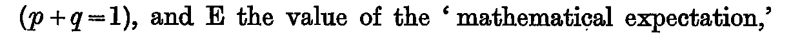
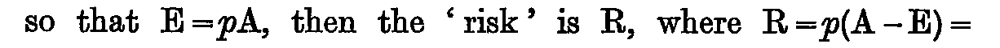
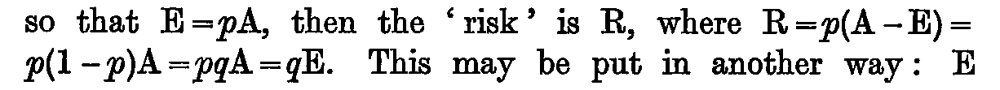
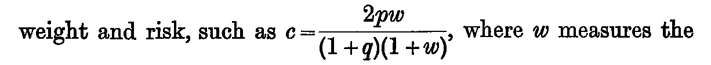
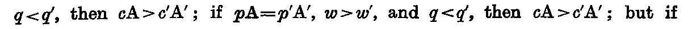
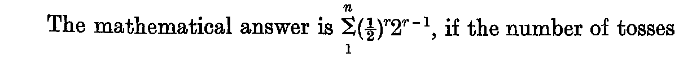
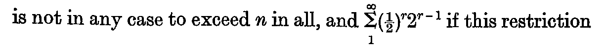
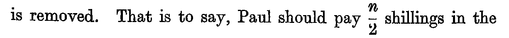
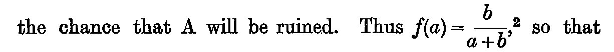

Chapter XXVI. The Application of Probability to Conduct
J. M. Keynes, A Treatise on Probability (London: Macmillan, 1921), first edition, pp. 307–323 (Cornell copy, PDF pp. 327–343). Formula atlas: every ledger row of the chapter beside the printed line it records.
| Formulas in Lean | 17 / 31 formulas (✓6 ≈10 ✎1), not yet 14 — 54.8% |
|---|---|
| Ledger rows | 43 |
| Formulas | 31 (display 3, inline 28; items 31, numbered 0) |
| Formulas by Lean status | ✓6 ≈10 ✎1 未14 |
| Notation | 11 (with a Lean counterpart 9) |
| Reference rows | 1 |
Every count on this page is computed from the census ledger, which is built from the page images of the 1921 first edition only (no translation, OCR or e-text is used to count). A formula is an expression containing a relation sign (=, ≠, <, >, ≤, ≥, ≡, ⊃, → and their printed variants, including formulas inside figures, tables and footnotes, and formulas quoted from other authors); a display formula counts one per printed line, so a chain of equalities set over three lines counts three, and an inline formula counts one per expression. A compound expression without a relation sign (such as a/h, g(φ, f) or x1x2…xn/ġh) is counted separately as notation; a bare symbol, even with subscripts, primes or bars, is not counted. Footnote formulas follow the same rule, and a formula reprinted on another page is counted again. The Lean column of a formula row takes one of four values, fixed mechanically: ✓ the printed relation appears as stated in a theorem (only the names of bound variables, Lean notation and the layout of subscripts may differ); ≈ a theorem states an algebraically equivalent form (cleared denominators, a definition substituted, a change of variables); ✎ the printed line is refuted or not derivable, and a corrected form is proved; 未 none of these (a line inside a proof, a definition only, or no counterpart).
ch26-001

- Transcription
(p + q = 1),- Lean
- 未
- Anchor words
p its probability- Remarks
- F26.1。未の理由: phase8a, phase8a2 とも q を 1 − p に置換して扱い、この関係は定理文に現れない (補則 8 既知の裁定)。phase8a/risk_identities と phase8a/c の分母 1 + q = 2 − p がこの約定を前提にする
- Crop
- folio 315, x 125–1335, y 989–1040 (full-size scan pixels)
ch26-002

- Transcription
E = pA,- Lean
- 未
- Anchor words
so that- Remarks
- F26.2。数学的期待の定義。未の理由: E の def がなく、phase8a/risk_identities は E を pA に置換した形 (補則 8 既知の裁定)
- Crop
- folio 315, x 125–1335, y 1040–1090 (full-size scan pixels)
ch26-003

- Transcription
R = p(A − E) = p(1 − p)A = pqA = qE.- Lean
- ≈phase8a/risk_identities
- Anchor words
where- Remarks
- F26.3。印刷は 2 行に跨る (1 行目末
R = p(A − E) =、2 行目頭p(1 − p)A = pqA = qE.)。行内の連鎖なので 1 本 (裁定事項)。≈ の理由: 定理文p * (A − p * A) = p * (1 − p) * A ∧ p * (1 − p) * A = (1 − p) * (p * A)は E = pA, q = 1 − p を代入した連鎖 (定義の代入)。先頭のR =は名前付けで、R の def はない - Crop
- folio 315, x 125–1335, y 1040–1140 (full-size scan pixels)
ch26-004
- Transcription
qE- Lean
- Nphase8a/risk_identities
- Anchor words
so that/is the 'risk.'- Remarks
- F26.4。「so that qE is the 'risk.'」。定理文の第 2 連言肢の右辺 (1 − p)(pA) に q = 1 − p, E = pA を代入した形で現れる
- Crop
- folio 315, x 125–1335, y 1241–1290 (full-size scan pixels)
ch26-005

- Transcription
c = 2pw/((1 + q)(1 + w)),- Lean
- ≈phase8a/c
- Anchor words
such as- Remarks
- F26.5。横線分数 (分子 2pw、分母 (1+q)(1+w))。行内だが分数のため行間が広い。≈ の理由: def
c p w := 2 * p * w / ((2 − p) * (1 + w))は分母の 1 + q を 2 − p に置換した形 (定義の代入)。phase8a2/c は同一の def。分母を払った形は phase8a/c_spec, phase8a2/c_spec - Crop
- folio 315, x 125–1335, y 1440–1548 (full-size scan pixels)
ch26-006
- Transcription
p = 1- Lean
- 未
- Anchor words
is equal to unity when- Remarks
- F26.6 前半。未の理由: 条件 p = 1 は phase8a/c_one_one (
c 1 1 = 1) に p := 1 の代入値としてしか現れず、関係式としては定理文にない (補則 8 の「置換で吸収」と同じ仕組み; 代入値を ≈ に数えるかは裁定事項) - Crop
- folio 315, x 125–1335, y 1548–1598 (full-size scan pixels)
ch26-007
- Transcription
w = 1,- Lean
- 未
- Anchor words
and/and to zero when(直後)- Remarks
- F26.6 後半。未の理由: ch26-006 と同じ (phase8a/c_one_one に w := 1 の代入値; 裁定事項)
- Crop
- folio 315, x 125–1335, y 1548–1598 (full-size scan pixels)
ch26-008
- Transcription
p = 0- Lean
- 未
- Anchor words
to zero when- Remarks
- F26.7 前半。未の理由: phase8a/c_zero_p (
c 0 w = 0) に p := 0 の代入値としてしか現れない (裁定事項) - Crop
- folio 315, x 125–1335, y 1598–1648 (full-size scan pixels)
ch26-009
- Transcription
w = 0,- Lean
- 未
- Anchor words
or/and has an intermediate value(直後)- Remarks
- F26.7 後半。未の理由: phase8a/c_zero_w (
c p 0 = 0) に w := 0 の代入値としてしか現れない (裁定事項)。「中間の値」(語) は phase8a/c_nonneg, c_le_one - Crop
- folio 315, x 125–1335, y 1598–1648 (full-size scan pixels)
ch26-010
- Transcription
R₁ = qR = q²E.- Lean
- ≈phase8a2/czuberRisk_one
- Quoted from
- Czuber
- Anchor words
of the second order,- Remarks
- F26.8。出典 Czuber, *Wahrscheinlichkeitsrechnung* vol. ii. pp. 219 et seq. ≈ の理由: 定理文
czuberRisk q E 1 = q * (q * E) ∧ czuberRisk q E 1 = q ^ 2 * Eは R₁ を czuberRisk q E 1 と書き、R を qE に置換した形 (定義の代入)。第 2 等号 qR = q²E 単独は phase8a2/th_26_fn1_second_order_risk (q * (q * E) = q ^ 2 * E、同じく R を置換) - Crop
- folio 315, x 125–1335, y 1939–1975 (full-size scan pixels)
ch26-011
- Transcription
E + R₁ + R₂ + . . . = E(1 + q + q² + . . .) = E/(1 − q) = E/p = A.- Lean
- ✎phase8a2/th_26_fn1_consistent_R (反駁 phase8a2/th_26_fn1_printed_refuted)
- Quoted from
- Czuber
- Anchor words
shifted :- Remarks
- F26.9。印刷は 1 行 (脚注の独立行)、
E/(1−q),E/pは横線分数。T 候補 (添字): 直前の定義 R₁ = qR = q²E のもとでは第 1 の等号は qE = 0 のときに限り成り立つ (phase8a2/th_26_fn1_printed_iff; 反例 q = 1/2, E = 1 は th_26_fn1_printed_refuted)。✎ の修正形は 2 通り: th_26_fn1_consistent_R (R を第 0 項に含めるE + Σ R_k = E/(1 − q)) と th_26_fn1_consistent_reindexed (添字を R_k = q^k E に直す)。第 2〜4 等号だけなら phase8a2/th_26_fn1_czuber_tsum (E = pA, q = 1 − p を代入した形、≈ 相当)。有限閉形式は phase8a/czuber_partial, czuber_remainder - Crop
- folio 315, x 125–1335, y 2010–2088 (full-size scan pixels)
ch26-012
- Transcription
pA = p′A′,- Lean
- ≈phase8a/keynes_F1
- Anchor words
If- Remarks
- F26.10 (F1) 第 1 条件。≈ の理由: 仮定 hE は
p * A = p * A′で、F1 の第 3 条件 q = q′ (ch26-014、未) を p′ = p として吸収したため p′ が p に同一視されている (✓ ではない) - Crop
- folio 315, x 125–1335, y 2088–2126 (full-size scan pixels)
ch26-013
- Transcription
w > w′,- Lean
- ✓phase8a/keynes_F1
- Anchor words
If pA = p′A′,の直後 /and(直後)- Remarks
- F26.10 第 2 条件。仮定 hww :
w′ < w(>と<の向きは Lean の記法の差) - Crop
- folio 315, x 125–1335, y 2088–2126 (full-size scan pixels)
ch26-014
- Transcription
q = q′,- Lean
- 未
- Anchor words
and/then(直後)- Remarks
- F26.10 第 3 条件。未の理由: phase8a/keynes_F1 は p′ を p に置換して表し、この関係は定理文に現れない (補則 8 既知の裁定)
- Crop
- folio 315, x 125–1335, y 2088–2126 (full-size scan pixels)
ch26-015
- Transcription
cA > c′A′ ;- Lean
- ≈phase8a/keynes_F1
- Anchor words
then(1 回目)- Remarks
- F26.10 結論。≈ の理由: 結論
c p w′ * A′ < c p w * Aは c′ = c(p′, w′) の p′ を p に同一視した形 (ch26-012 と同じ吸収) - Crop
- folio 315, x 125–1335, y 2088–2126 (full-size scan pixels)
ch26-016
- Transcription
pA = p′A′,- Lean
- ✓phase8a/keynes_F2
- Reprint of
- ch26-012
- Anchor words
if(2 回目、;の後)- Remarks
- F26.11 (F2) 第 1 条件。仮定 hE :
p * A = p′ * A′(そのまま)。phase8a2/th_26_fn2_F2 も同形 - Crop
- folio 315, x 125–1335, y 2088–2126 (full-size scan pixels)
ch26-017
- Transcription
w = w′,- Lean
- 未
- Anchor words
and(行末、脚注 1 行目末)- Remarks
- F26.11 第 2 条件。未の理由: phase8a/keynes_F2, phase8a2/th_26_fn2_F2 は w′ を w に置換して表し、この関係は定理文に現れない (補則 8 既知の裁定)
- Crop
- folio 315, x 125–1335, y 2088–2126 (full-size scan pixels)
ch26-018

- Transcription
q < q′,- Lean
- ≈phase8a/keynes_F2
- Anchor words
then(直後、脚注 2 行目頭)- Remarks
- F26.11 第 3 条件。≈ の理由: 仮定 hpp :
p′ < pは q = 1 − p, q′ = 1 − p′ を代入して同値変形した不等式 (定義の代入)。phase8a2/th_26_fn2_F2 も同形 - Crop
- folio 315, x 125–1335, y 2126–2160 (full-size scan pixels)
ch26-019
- Transcription
cA > c′A′ ;- Lean
- ≈phase8a/keynes_F2
- Reprint of
- ch26-015
- Anchor words
then(2 回目)- Remarks
- F26.11 結論。≈ の理由: 結論
c p′ w * A′ < c p w * Aは c′ = c(p′, w′) の w′ を w に同一視した形 (ch26-017 の吸収)。phase8a2/th_26_fn2_F2 も同形 - Crop
- folio 315, x 125–1335, y 2126–2160 (full-size scan pixels)
ch26-020
- Transcription
pA = p′A′,- Lean
- ✓phase8a/keynes_F3
- Reprint of
- ch26-012
- Anchor words
if(3 回目)- Remarks
- F26.12 (F3) 第 1 条件。仮定 hE :
p * A = p′ * A′(そのまま) - Crop
- folio 315, x 125–1335, y 2126–2160 (full-size scan pixels)
ch26-021
- Transcription
w > w′,- Lean
- ✓phase8a/keynes_F3
- Reprint of
- ch26-013
- Anchor words
and- Remarks
- F26.12 第 2 条件。仮定 hww :
w′ < w - Crop
- folio 315, x 125–1335, y 2126–2160 (full-size scan pixels)
ch26-022
- Transcription
q < q′,- Lean
- ≈phase8a/keynes_F3
- Reprint of
- ch26-018
- Anchor words
and/then(直後)- Remarks
- F26.12 第 3 条件。≈ の理由: 仮定 hpp :
p′ < p(ch26-018 と同じ同値変形) - Crop
- folio 315, x 125–1335, y 2126–2160 (full-size scan pixels)
ch26-023
- Transcription
cA > c′A′ ;- Lean
- ✓phase8a/keynes_F3
- Reprint of
- ch26-015
- Anchor words
then(3 回目) /but if(直後)- Remarks
- F26.12 結論。結論
c p′ w′ * A′ < c p w * Aは c = c(p, w), c′ = c(p′, w′) の関数適用の記法で、変数の同一視なし - Crop
- folio 315, x 125–1335, y 2126–2160 (full-size scan pixels)
ch26-024
- Transcription
pA = p′A′,- Lean
- ✓phase8a/keynes_F4_printed_determinate
- Reprint of
- ch26-012
- Anchor words
but if- Remarks
- F26.13 (F4) 第 1 条件 (脚注 3 行目頭)。仮定 hE :
p * A = p′ * A′(そのまま)。phase8a2/th_26_fn2_F4_printed_determinate も同形 - Crop
- folio 315, x 125–1335, y 2160–2201 (full-size scan pixels)
ch26-025
- Transcription
w = w′,- Lean
- 未
- Reprint of
- ch26-017
- Anchor words
and- Remarks
- F26.13 第 2 条件。原寸で
w = w′を再確認。未の理由: phase8a/keynes_F4_printed_determinate, phase8a2/th_26_fn2_F4_printed_determinate は w′ を w に置換して表す (補則 8 既知の裁定) - Crop
- folio 315, x 125–1335, y 2160–2201 (full-size scan pixels)
ch26-026
- Transcription
q > q′,- Lean
- ≈phase8a/keynes_F4_printed_determinate
- Anchor words
and/we cannot in general compare(直後)- Remarks
- F26.13 第 3 条件。≈ の理由: 仮定 hpp :
p < p′(q = 1 − p の代入による同値変形)。phase8a2/th_26_fn2_F4_printed_determinate も同形。この行は条件であり、本文の主張 "we cannot in general compare" は語なので式行にない。印刷どおりの条件 (w = w′, q > q′) では F2 の記号交換で cA < c′A′ が確定し「比較できない」と両立しない (原著側の不整合、8a 正誤候補 #3)。修正案 (w > w′, q > q′) の非比較性は phase8a/keynes_F4_amended_witness_lt, keynes_F4_amended_witness_gt; phase8a2/th_26_fn2_F4_amended_witness_lt, th_26_fn2_F4_amended_witness_gt - Crop
- folio 315, x 125–1335, y 2160–2201 (full-size scan pixels)
ch26-027
- Transcription
cA- Lean
- Nphase8a/keynes_F4_printed_determinate
- Anchor words
we cannot in general compare- Remarks
- F26.13 結論部。定理文の
c p w * A - Crop
- folio 315, x 125–1335, y 2160–2201 (full-size scan pixels)
ch26-028
- Transcription
c′A′.- Lean
- Nphase8a/keynes_F4_printed_determinate
- Anchor words
and(脚注末)- Remarks
- F26.13 結論部。定理文の
c p′ w * A′(w′ を w に置換) - Crop
- folio 315, x 125–1335, y 2160–2201 (full-size scan pixels)
ch26-029
- Transcription
2^{r−1}- Lean
- Nphase8a2/th_26_petersburg_term
- Anchor words
and, in general,- Remarks
- F26.14。Petersburg の利得規則。定理文の
2 ^ (r − 1)。直後のr^{th}は序数 (裸記号)。phase8a2/th_26_first_head は確率側の補助 - Crop
- folio 316, x 125–1335, y 1855–1905 (full-size scan pixels)
ch26-030

- Transcription
Σ_{1}^{n} (½)^r 2^{r−1},- Lean
- Nphase8a2/th_26_petersburg_finite
- Anchor words
The mathematical answer is- Remarks
- F26.15。和記号の上に n、下に 1; 括弧内は小活字の ½ (原寸で確認)。関係記号なし。定理文の
∑ r ∈ Icc 1 n, (1/2)^r * 2^(r − 1) - Crop
- folio 317, x 125–1335, y 180–282 (full-size scan pixels)
ch26-031

- Transcription
Σ_{1}^{∞} (½)^r 2^{r−1}- Lean
- Nphase8a2/th_26_petersburg_unbounded
- Anchor words
in all, and- Remarks
- F26.16。和記号の上に ∞、下に 1。部分和の非有界 (th_26_petersburg_unbounded)、極限 (th_26_petersburg_tendsto)、総和不能 (th_26_petersburg_not_summable) の 3 形
- Crop
- folio 317, x 125–1335, y 284–390 (full-size scan pixels)
ch26-032

- Transcription
n/2- Lean
- Nphase8a2/th_26_petersburg_finite
- Anchor words
Paul should pay- Remarks
- F26.17。横線分数。定理文の右辺
n / 2 - Crop
- folio 317, x 125–1335, y 400–500 (full-size scan pixels)
ch26-033
- Transcription
dy = k dx/x,- Lean
- ≈phase8a2/th_26_bernoulli_deriv
- Quoted from
- D. Bernoulli
- Anchor words
and y the 'moral' fortune,- Remarks
- F26.18。横線分数 dx/x、末尾コンマ。≈ の理由: 定理文
HasDerivAt (fun x => k * Real.log (x / a)) (k / x) xは y に ch26-034 の定義を代入し、微分方程式を導関数 k/x の形 (dx を払った形) に書き直したもの (定義の代入 + 分母を払った形)。y を一般の関数とする微分方程式そのものではない (裁定事項、読み手役 参考 1) - Crop
- folio 317, x 125–1335, y 1895–2002 (full-size scan pixels)
ch26-034
- Transcription
y = k log x/a,- Lean
- 未
- Quoted from
- D. Bernoulli
- Anchor words
or/where k and a are constants.(直後)- Remarks
- F26.19。横線分数 x/a。未の理由: y の def も y = … の文もなく、phase8a2/th_26_bernoulli_deriv の被微分関数
fun x => k * Real.log (x / a)に置換で吸収されている (補則 8 既知の裁定)。積分定数の補助は phase8a2/th_26_bernoulli_initial - Crop
- folio 317, x 125–1335, y 2010–2112 (full-size scan pixels)
ch26-035
- Transcription
x = (a + x₁)p₁(a + x₂)p₂ . . .,- Lean
- 未
- Quoted from
- D. Bernoulli / Laplace
- Anchor words
the further formula—- Remarks
- F26.20。本文 "built up both by Bernoulli himself and by Laplace. It leads easily to the further formula"。F 候補: p₁, p₂ が指数でなくベースラインに下付き数字で組まれている (既存台帳の原寸 3 倍で確認)。未の理由 (第 4 回、司令塔裁定): 定理文に x = … の関係が現れず x の def もない (置換で吸収)。phase8a2/th_26_moral_expectation と phase8a2/th_26_laplace_printed_refuted は右辺に置換した形。前者は指数形の右辺 Π(a + x_i)^{p_i} について
k * log(Π (a + x i) ^ (p i) / a) = Σ p i * (k * log((a + x i) / a))、後者は文字どおり積と読んだ右辺が a = 1, x₁ = x₂ = 1, p₁ = p₂ = ½ で道徳的期待の等式を満たさないことを示す - Crop
- folio 318, x 125–1335, y 310–395 (full-size scan pixels)
ch26-036
- Transcription
2^{24}- Lean
- Nphase8a2/th_26_two_pow_24
- Quoted from
- Cramer
- Anchor words
all sums greater than- Remarks
- F26.22。定理文の
(2:ℕ) ^ 24; cramerCapped の上限2 ^ 24(th_26_cramer_cap)。直後の括弧内(16,777,116)は参考行 ch26-043 (F 候補) - Crop
- folio 318, x 125–1335, y 812–865 (full-size scan pixels)
ch26-037
- Transcription
R/E- Lean
- Nphase8a2/th_26_relative_risk
- Anchor words
and the relative risk/will be almost unity.(直後)- Remarks
- F26.24。横線分数 (R 上、E 下)。定理文の
petersburgRisk n / (n / 2)(解釈つき: R は単一利得についてしか定義されていない; petersburgRisk は多結果への拡張)。極限は th_26_relative_risk_tendsto、R の非有界は th_26_petersburg_risk_unbounded - Crop
- folio 319, x 125–1335, y 631–736 (full-size scan pixels)
ch26-038
- Transcription
f(a)- Lean
- 未
- Quoted from
- Laurent
- Anchor words
francs respectively./is the chance that(直後)- Remarks
- F26.25 の導入 (A が破産する確率)。f の def はない
- Crop
- folio 319, x 125–1335, y 1140–1191 (full-size scan pixels)
ch26-039

- Transcription
f(a) = b/(a + b),- Lean
- 未
- Quoted from
- Laurent
- Anchor words
Thus- Remarks
- F26.25。横線分数 (分子 b、分母 a + b)、脚注番号 2 が続く。式自体は Laurent, *Calcul des probabilités* p. 129 の引用で導出なし。未の理由: f の def がなく、phase8a2/th_26_laurent_poorer は右辺を代入した帰結 (単調性
b / (a′ + b) < b / (a + b)) だけで、この等式は定理文に現れない (ch26-034 と同じ吸収) - Crop
- folio 319, x 125–1335, y 1190–1292 (full-size scan pixels)
ch26-040
- Transcription
b = ∞ ,- Lean
- 未
- Quoted from
- Laurent
- Anchor words
But further, if- Remarks
- F26.26 前半。∞ の前後に空き。未の理由: phase8a2/th_26_laurent_limit は b → ∞ の極限
Tendsto (fun b => b / (a + b)) atTop (𝓝 1)で、b = ∞という関係は定理文に現れない。極限形を ✎ (導けない印刷形の修正形) に数えるかは裁定事項 - Crop
- folio 319, x 125–1335, y 1345–1394 (full-size scan pixels)
ch26-041
- Transcription
f(a) = 1,- Lean
- 未
- Quoted from
- Laurent
- Anchor words
i.e. ruin is certain.(直後)- Remarks
- F26.26 後半。未の理由: f の def がなく、phase8a2/th_26_laurent_limit の極限値 1 としてしか現れない (ch26-040 と同じ裁定事項)
- Crop
- folio 319, x 125–1335, y 1345–1394 (full-size scan pixels)
ch26-042
- Transcription
1/10,000- Lean
- 未
- Quoted from
- Buffon
- Anchor words
when he names- Remarks
- F26.27。小活字の横線分数。経験的定数 (8a2 では対象外と明記)。数値分数を記法に数えるかは裁定事項 (ch24-001 と同じ)
- Crop
- folio 322, x 125–1335, y 815–875 (full-size scan pixels)
ch26-043
- Transcription
(16,777,116)- Lean
- Rphase8a2/th_26_printed_16777116_refuted
- Quoted from
- Cramer
- Anchor words
than 2^{24}/are regarded as(直後)- Remarks
- F26.22 の括弧内数値。2^24 = 16,777,216 (th_26_two_pow_24) なので 1 桁の誤植 (F 候補)。数値語なので式にも記法にも数えない
- Crop
- folio 318, x 125–1335, y 812–865 (full-size scan pixels)